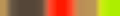
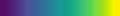

PaletteFx: Add more colors to your keyboard
Pascal Getreuer, 2024-12-26 (updated 2025-03-09)
Vortex effect rendered with Afterburn palette, running on a Voyager.
Overview
While most of QMK’s built-in RGB matrix effects are based on a single color hue, sampling from a palette of colors allows for more personality. This post describes PaletteFx, a suite of animated custom effects for QMK’s RGB Matrix in which colors are sampled from a palette, aka color gradient or color map.
PaletteFx includes 16 palettes and 6 effects, with the possibility to define additional palettes and effects.
License
PaletteFx and code samples in this post are shared under Apache 2 license.
Copyright 2024 Google LLC
Licensed under the Apache License, Version 2.0 (the “License”); you may not use this file except in compliance with the License. You may obtain a copy of the License at
https://www.apache.org/licenses/LICENSE-2.0
Unless required by applicable law or agreed to in writing, software distributed under the License is distributed on an “AS IS” BASIS, WITHOUT WARRANTIES OR CONDITIONS OF ANY KIND, either express or implied. See the License for the specific language governing permissions and limitations under the License.
Gallery
Click to preview the effects and palettes.
|
Gradient |
Flow |
Ripple |
|
Sparkle |
Vortex |
Reactive |
| Afterburn |
| Amber |
| Bad Wolf |
| Carnival |
| Classic |
| Dracula |
| Groovy |
| Not Pink |
| Phosphor |
| Polarized |
| Rose Gold |
| Sport |
| Synthwave |
| Thermal |
| Viridis |
| Watermelon |
Note: The “Reactive” effect responds to your key presses in real use. Here, random presses are simulated for sake of demonstration.
Add PaletteFx to your keymap
Prerequisites: You need a keyboard with an RGB LED matrix.
Step 1: Install my community modules. Then
enable module getreuer/palettefx
in your keymap.json file. Or if keymap.json
does not exist, create it with the following content:
{
"modules": ["getreuer/palettefx"]
}Step 2: In your keymap folder, create a file
rgb_matrix_user.inc with the following content, or if it
already exists, add this as the first line:
#include "palettefx.inc"Optional: Enable a subset of effects or palettes
By default, if nothing is explicitly configured, all effects and
palettes are enabled. Alternatively, you may enable effects and/or
palettes in config.h individually with
“#define PALETTEFX_<name>_ENABLE.”
This way you can select just your favorites and conserve firmware space.
Example:
// Enable just the Gradient and Ripple effects.
#define PALETTEFX_GRADIENT_ENABLE
// #define PALETTEFX_FLOW_ENABLE
#define PALETTEFX_RIPPLE_ENABLE
// #define PALETTEFX_SPARKLE_ENABLE
// #define PALETTEFX_VORTEX_ENABLE
// #define PALETTEFX_REACTIVE_ENABLE
// Or enable all effects with
// #define PALETTEFX_ENABLE_ALL_EFFECTS
// Enable just the Afterburn, Not Pink, and Phosphor palettes.
#define PALETTEFX_AFTERBURN_ENABLE
// #define PALETTEFX_AMBER_ENABLE
// #define PALETTEFX_BADWOLF_ENABLE
// #define PALETTEFX_CARNIVAL_ENABLE
// #define PALETTEFX_CLASSIC_ENABLE
// #define PALETTEFX_DRACULA_ENABLE
// #define PALETTEFX_GROOVY_ENABLE
#define PALETTEFX_NOTPINK_ENABLE
#define PALETTEFX_PHOSPHOR_ENABLE
// #define PALETTEFX_POLARIZED_ENABLE
// #define PALETTEFX_ROSEGOLD_ENABLE
// #define PALETTEFX_SPORT_ENABLE
// #define PALETTEFX_SYNTHWAVE_ENABLE
// #define PALETTEFX_THERMAL_ENABLE
// #define PALETTEFX_VIRIDIS_ENABLE
// #define PALETTEFX_WATERMELON_ENABLE
// Or enable all palettes with
// #define PALETTEFX_ENABLE_ALL_PALETTES📝 Note
At least one effect and one palette must be enabled.
Using PaletteFx
Selecting effects: PaletteFx effects are appended to
the list of existing RGB Matrix effects. Use the usual
RM_NEXT / RM_PREV keycodes to switch to the
PaletteFx effects.
Selecting palettes: PaletteFx effects repurpose the
RGB Matrix hue setting to select which palette to use. Use the hue
keycodes RM_HUEU / RM_HUED to cycle through
them. The ith palette corresponds to hue =
RGB_MATRIX_HUE_STEP * i.
Keycodes summary:
| Keycodes | Description |
|---|---|
RM_NEXT / RM_PREV |
Cycle through effects. |
RM_HUEU / RM_HUED |
Cycle through palettes. |
RM_SATU / RM_SATD |
Increase / decrease saturation (color vibrancy). |
RM_VALU / RM_VALD |
Increase / decrease value (brightness). |
RM_SPDU / RM_SPDD |
Increase / decrease animation speed. |
Optionally, it is also possible to configure effect settings programmatically. The following two subsections show two examples.
Set a favorite at startup
If you’d like to set a favorite effect and palette at startup, use
the RGB Matrix
functions in keyboard_post_init_user(). Here is an
example. This supposes you copied the palettefx.h
header for the definition of PALETTEFX_CARNIVAL. In
keymap.c, add:
void keyboard_post_init_user(void) {
// Set the effect.
rgb_matrix_mode_noeeprom(RGB_MATRIX_CUSTOM_PALETTEFX_FLOW);
// Set the palette and maximize saturation and brightness.
uint8_t palette_index = PALETTEFX_CARNIVAL; // Set Carnival palette.
rgb_matrix_sethsv_noeeprom(RGB_MATRIX_HUE_STEP * palette_index, 255, 255);
// Set speed to default.
rgb_matrix_set_speed_noeeprom(128);
// Make sure RGB Matrix is on.
rgb_matrix_enable_noeeprom();
}Random palette button
A “random palette” macro button can be implemented by setting the hue pseudorandomly. Here is a possible implementation:
enum custom_keycodes {
RANDPAL = SAFE_RANGE,
// Other custom keycodes...
};
// Use RANDPAL somewhere in your layout...
bool process_record_user(uint16_t keycode, keyrecord_t* record) {
switch (keycode) {
case RANDPAL: // Picks a random palette.
if (record->event.pressed) {
// Pick a pseudorandom hue in 0-255, seeded by the current time.
uint8_t h = (UINT16_C(17099) * timer_read()) >> 8;
rgb_matrix_sethsv_noeeprom(h, 255, 255);
}
return false;
// Other macros...
}
return true;
}Make your own palettes
Create file palettefx_user.inc in your keymap folder to
define additional palettes. An example
palettefx_user.inc:
{ // Inferno palette.
HSV16(170, 255, 0),
HSV16(172, 170, 51),
HSV16(186, 221, 85),
HSV16(196, 255, 119),
HSV16(205, 238, 119),
HSV16(217, 221, 136),
HSV16(229, 204, 170),
HSV16(239, 204, 187),
HSV16(250, 187, 221),
HSV16( 6, 204, 255),
HSV16( 16, 238, 255),
HSV16( 22, 255, 255),
HSV16( 27, 255, 255),
HSV16( 33, 255, 255),
HSV16( 39, 170, 255),
HSV16( 44, 102, 255),
},The general syntax is:
{
|
Opening curly brace, defining a C array. |
HSV16(h,s,v),(16 times) |
16 palette colors. The colors are in hue-saturation-value
(HSV) representation with h, s, v
component values in the range 0–255. |
},
|
Closing curly brace followed by a comma. |
The above structure may be repeated to add multiple palettes.
A few notes:
Prefer bright, saturated colors. Colors produced by RGB matrix LEDs come across more weakly than they do from a computer screen.
Prefer smooth changes in hue. Palette colors are interpolated in HSV space. Interpolation may introduce unintended colors if hue changes abruptly.
Small steps in s and v won’t be represented. For storage efficiency, a palette color is packed into 16 bits, with s and v quantized to 4 bits each.
Make your own palette-based effects
You can write your own palette-based RGB matrix effects. In
rgb_matrix_user.inc, define your effects below the
#include line for palettefx.inc. Example:
#include "palettefxture.inc"
RGB_MATRIX_EFFECT(MY_COOL_EFFECT)
#ifdef RGB_MATRIX_CUSTOM_EFFECT_IMPLS
static bool MY_COOL_EFFECT(effect_params_t* params) {
RGB_MATRIX_USE_LIMITS(led_min, led_max);
// Get pointer to the selected palette data.
const uint16_t* palette = palettefx_get_palette_data();
// Compute scaled time that wraps smoothly on 16-bit range overflow.
uint16_t time =
palettefx_scaled_time(g_rgb_timer, 1 + rgb_matrix_config.speed / 4);
for (uint8_t i = led_min; i < led_max; ++i) {
RGB_MATRIX_TEST_LED_FLAGS();
uint8_t x = g_led_config.point[i].x;
uint8_t value = sin8(x + time);
// Interpolate the palette at `value`, where `0 <= value <= 255`.
hsv_t hsv = palettefx_interp_color(palette, value);
rgb_t rgb = rgb_matrix_hsv_to_rgb(hsv);
rgb_matrix_set_color(i, rgb.r, rgb.g, rgb.b);
}
return rgb_matrix_check_finished_leds(led_max);
}
#endif // RGB_MATRIX_CUSTOM_EFFECT_IMPLSFixed-point math
A brief aside regarding effect math: for efficiency, QMK implements effect math purely in fixed-point arithmetic, as do PaletteFx’s effects. This is significant especially on AVR microcontrollers, as they lack native floating-point instructions. It is costly (both in time and firmware space) to emulate float math in software.
The lib8tion
library is handy for fixed-point arithmetic, and it’s source code is
already included in QMK. A nice building block is
scale8(x, y), which efficiently computes
“(x * y) / 256” of two uint8_t values. There
are also functions like sin8(x) for fast crude
trigonometry, accurate within a couple percent. As the lib8tion source
says, “don’t use these approximations for calculating the trajectory of
a rocket to Mars, but they’re great for art projects and LED
displays.”
Resources
- Custom RGB Matrix Effects documentation
- quantum/rgb_matrix/animations – code for QMK’s built-in effects
- lib8tion library – fast 8-bit and 16-bit math
Implementation details
Here are some notes on how PaletteFx is implemented. See also the code itself in palettefx.inc.
Palettes are efficiently stored, each taking only 32 bytes of flash
memory. A palette is a lookup table in PROGMEM of 16
colors. Each color is packed in a uint16_t, the bottom 8
bits being hue, middle 4 bits for saturation, and the top 4 bits for
value. To unpack a color, bit shift and mask the fields, then multiply
the 4-bit components by 17 to rescale them to 0–255 range:
(hsv_t){
.h = (uint8_t)hsv16,
.s = ((uint8_t)(hsv16 >> 8) & 0x0f) * 17,
.v = ((uint8_t)(hsv16 >> 12) & 0x0f) * 17,
};The palette is piecewise-linearly interpolated in HSV space. To
interpolate the color at x, x in 0–255, we do
the following:
Subtract 8 from
x, then clamp it to the range 0–239.Compute a table index
i = x / 16in 0–14 (integer division rounding down) and a fractional partfrac = (x % 16) * 16.Read the
ith and(i+1)th palette colors.In each HSV component, linearly interpolate or “lerp” between the two palette colors with
fracas the blend weight. This is efficiently done with lib8tion’slerp8by8(a, b, frac)function.In the lerp step, an adjustment is needed for hue. Since hue wraps circularly mod 256, blending should take the “short way around” the circle. For instance, the midpoint between hue 240 and hue 10 should be hue 253 [= (240 + 266) / 2], not hue 125. Let
a.handb.hbe the two hue values, then:- If
|a.h - b.h|< 128, no adjustment is needed. - Otherwise if
|a.h - b.h|≥ 128, rotate both hue values by 128a.h' = (a.h + 128) % 256andb.h' = (b.h + 128) % 256, lerp the rotated values, then rotate the result by 128.
This can be concisely written in 8-bit ops as:
uint8_t hue_wrap = 128 & (a.h >= b.h ? (a.h - b.h) : (b.h - a.h)); uint8_t h = lerp8by8(a.h ^ hue_wrap, b.h ^ hue_wrap, frac) ^ hue_wrap;- If
Scale the interpolated color’s saturation and value by RGB Matrix’s configured saturation and value settings.
Finally, use
rgb_matrix_hsv_to_rgb()to convert the HSV color to RGB.
Credits and Acknowledgements
Thanks to @iamdanielv on GitHub for helpful feedback and suggestions to make PaletteFx better.
PaletteFx’s palettes are inspired by these excellent works.
The Bad Wolf theme is by Steve Losh, distributed under MIT/X11 license.
The Dracula theme is by Zeno Rocha, distributed under MIT license.
The Gruvbox theme is by Pavel Pertsev, distributed under MIT/X11 license.
The Solarized theme is by Ethan Schoonover, distributed under MIT license.
The Viridis colormap is by Stéfan van der Walt and Nathaniel Smith, distributed under CC0 license.